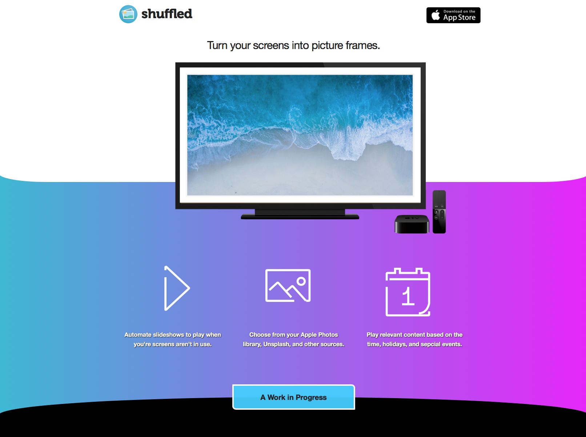

Shuffled - A Photo Wall
For awhile now, my wife and I have had the idea of a smart photo wall. Something that could schedule screen savers, sync across multiple displays, etc. We love documenting memories, and we wanted an elegant way to display them.
We sat on this idea for a few years. To make a photo wall look like photos, custom woodworking/cabinetry would have to be built around the displays. Then, an AppleTV would have to hook into each TV and be preconfigured to play a certain slideshow.
If all of that were accomplished, an acceptable photo wall would be created. Ideally though, the content would be dynamic and relevant to events in the house, holidays, and even live during a party.
The Solution
We were kicked into gear when Samsung released The Frame TV. It is gorgeous, and looks like a picture frame. It comes with photo management software, but it is not powerful enough to solve our needs. However, the physical appearance is more than good enough to remove our requirement of custom wood working to conceal the displays.
All that was left was a better way to manage slideshows. Surprisingly, there is no good software for it. So, I threw together a quick proof of concept, and it seemed to be a reasonable scope of work that was enjoyable to create. I’ll keep moving forward. My wife will make sure it reaches enough features for our household needs. As for becoming an actual product – time will tell.
The Landing Page
For this project, I wanted to try and create a landing page first and to use it as motivation. Towards the bottom, there is an active development list. I’ll report back on this experiment.
